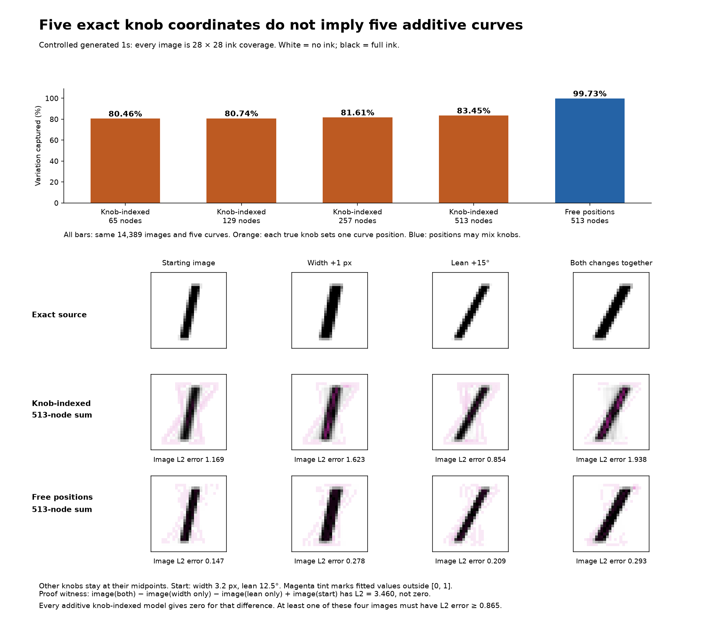

Construct curves directly from the knobs
Each true knob value supplies the position on its corresponding curve. That makes a stricter model than the free fit.
What happens when we add detail?

The best direct 513-node fit captures 83.446%; the free five-curve fit captures 99.734%. These scores use the same 14,389-point cloud.
Can we construct the global best?
Yes, for independent knob-indexed curves on a complete grid. Average over the other four knobs at each value, then subtract the overall mean. This directly gives the optimal additive curves.
| Values per knob | All joint images | Global best capture |
|---|---|---|
| 5 | 3,125 | 81.726% |
| 9 | 59,049 | 81.479% |
| 13 | 371,293 | 81.422% |
These are exact optima on the stated discrete grids. Around 81.4% is the observed limit as the uniform grid gets denser; it is not a proven exact percentage for the continuous box.
Why finer curves cannot reach perfection
Width changes the pixel pattern differently at different lean values. A single width-only contribution cannot express that dependence. Every additive knob-indexed model has zero mixed difference; the four rendered images above have mixed-difference L2 3.460.
This proves exact reconstruction is impossible under this restriction, even with infinitely many nodes. Free mixed coordinates avoid that restriction; the proof does not set their ceiling.